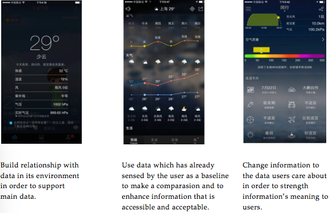
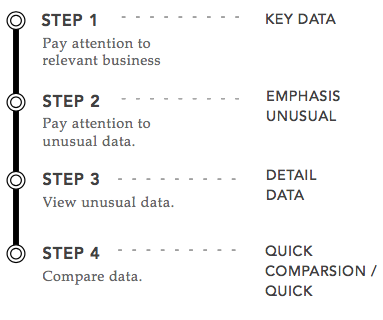

JD MBA is a long-lasting project I did at JD.com (NASDAQ: JD). Its aim was to collect user data from the JD mobile app like the UV, PV...It was a super project with 10 product managers, 50 developers participating. Thus, communication and compromise were the key issues to make the project happen.
Informative Environment Information Environmented means to ensure that data is immersing in an environment that user can easily access and understand the information that data conveys.
User Mental Model User mental model is the frequency method we use to design interfaces. Through analyzing user mental model, we arranged an information hierarchy according to deep user needs that make them acquire data efficiently.
